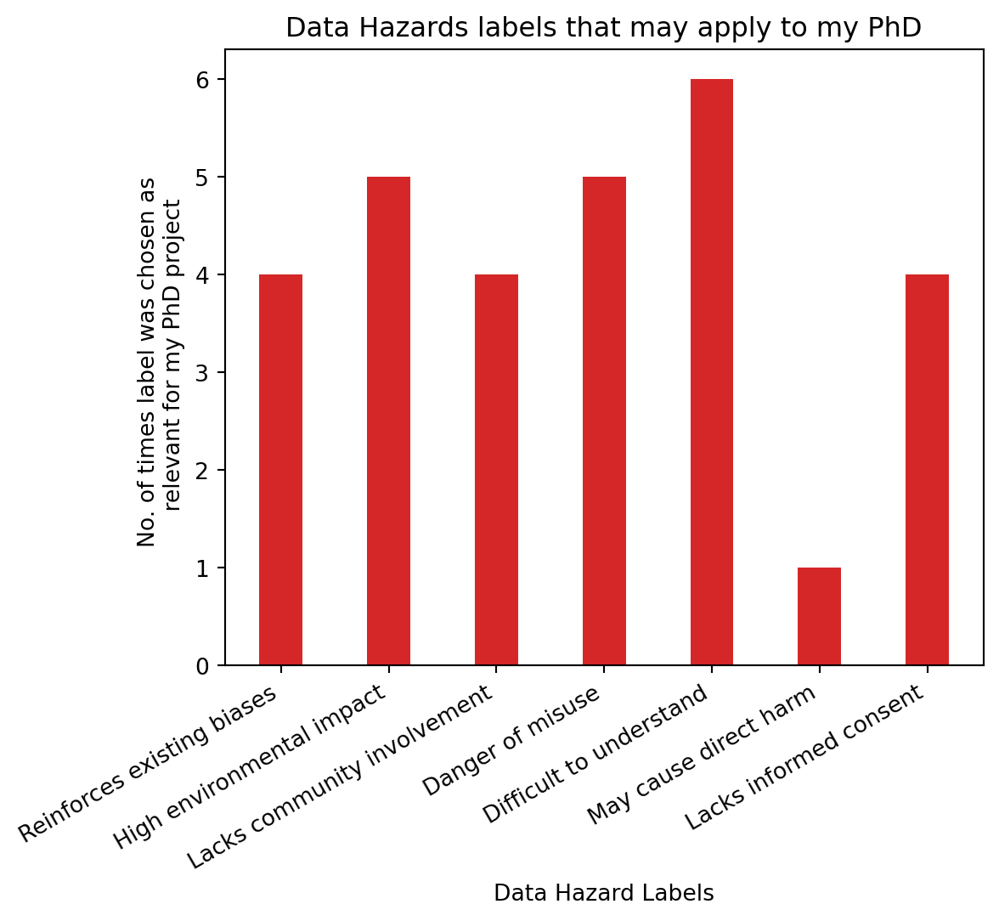
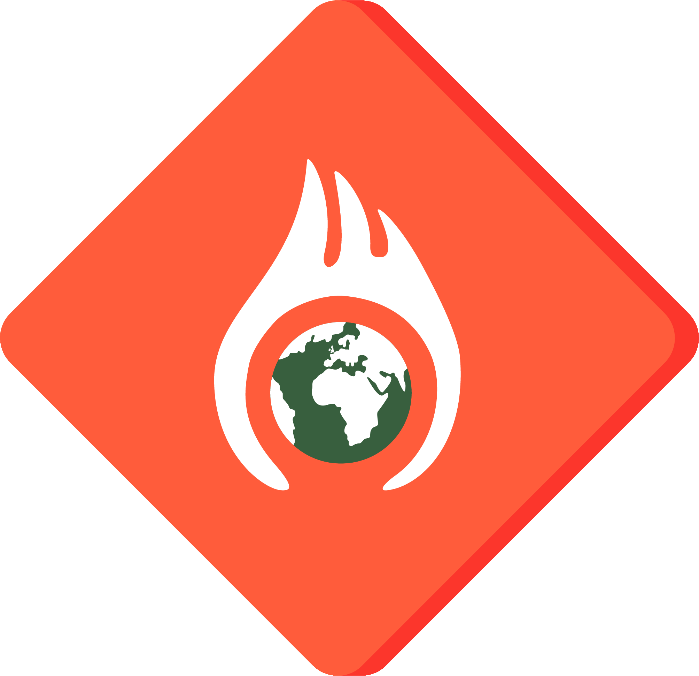
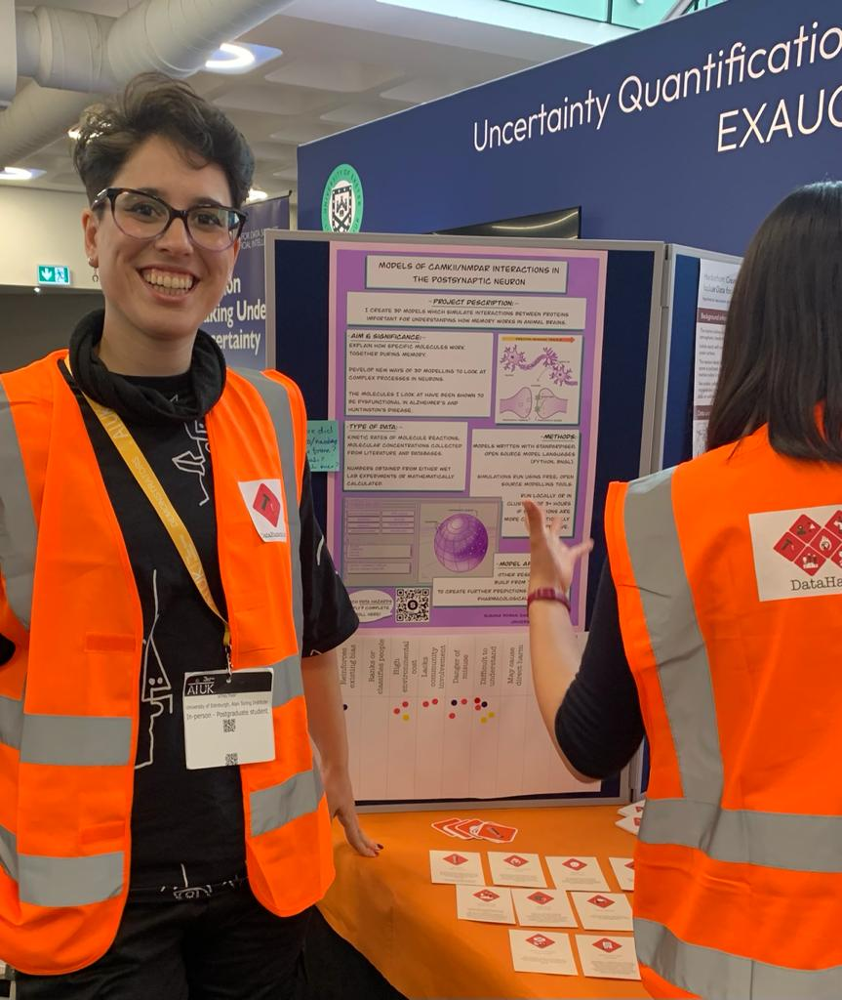
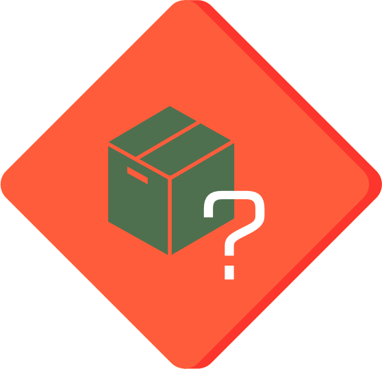

3 Data Hazards
The ethical implications that ought to be considered when doing research, usually go beyond what most ethics Institutional Review Boards propose; they should include questions about the wider societal impact of how data science and algorithms work. This is where a project like the Data Hazards Project comes in handy. Data Hazards is a project made to help us in thinking about worst-case scenarios and ways to mitigate these.
The Data Hazards Project has created a community-developed shared vocabulary of data science risks. The vocabulary presents data ethics concepts in the form of Data Hazard Labels, similarly to chemical hazard labels. This project exists to facilitate material for interdisciplinary discussions and self-reflection about all kinds of data ethics risks. How do these labels look like and how can they be implemeted? Let’s go through some examples to show how.
3.1 Example label: high environmental cost

3.1.1 Description
This hazard is appropriate where methodologies are energy-hungry, data-hungry (requiring more and more computation), or require special hardware that require rare materials.
3.1.2 Examples
- Example: Running computer models in super computers requires vast energy usage.
3.1.3 Safety Precautions
- Consider in what circumstances it is worthwhile to use this type of methodology.
- To communicate the scale of the issue to other stakeholders, you may want to convert units of energy into more relatable units.
- Find out if your cloud provider uses renewable energy.
- Consider profiling your code, and rewriting it to use less energy.
- Consider future work that would reduce the need to use increasingly more resources.
3.2 How to use the Data Hazards Project
There are four steps to using the Data Hazard labels:
- Learning: familiarising yourself with the Data Hazard labels.
- Applying: deciding which Hazard labels are relevant to your project.
- Reflecting: on what to do differently and what mitigations to make.
- Display: displaying the labels alongside your work can help you to communicate that you’ve thought about these broad ethical issues and how you’d like others to use your work.
This spells LARD 🧈, which makes it pretty easy to remember! It is however an unfortunate word it shortens to, as lard comes from dead pigs, so I like to manifest it’s a plant-based LARD 🌱.
As part of a Turing Way Book Dash hosted in May 2023, I worked together with a team to create a chapter on Data Hazards for the Turing Way Book. This chapter is still in draft form, as part of this experience we worked with an artist from Scriberia, to make an illustration of the Data Hazards application (Figure 3.2).

3.3 Application example into Research life-cycle
To help visualize where and when Data Hazards can be used in your workflow, below is an example assuming four main stages of workflow: design, data collection, data analysis and reporting. This is a generalised example, but something like this is what it looks like for me when I work on my PhD.
3.3.1 Design:
- Are you using data? Then doing some reflection on identity and positionality could help you think of what Data Hazards labels you might encounter as you design your project, for example “ranks of classifies people hazard” or “risk to privacy” could apply at this stage.
- In this part of the workflow, you might want to prepare to avoid certain Data Hazards if you can, and if you can’t avoid them because of where your data has come from, you may want to acknowledge this. For example, if you a sensitive data project, what Data Hazard labels will apply, and/or what can you do to design your project in a way that avoids certain harms?
3.3.2 Data Collection and Analysis:
- As you are collecting and analyzing your data, you might want to iteratively think of the potential Data Hazards that exist in the information you are collecting. To then apply the labels as you perform the next step of the process: reporting.
3.3.3 Reporting:
- When reporting your results, you can think of applying and reporting the Data Hazard labels that are relevant for your project; examples of how I’ve done this can be found below in Table 3.1. Labeling your project with Data Hazards should also include considerations of mitigations to these risks. This would then be helpful for people who see your outputs in the future. They can be aware of potential risks as they proceed with the project, and continue to think of solutions to any issues related to the research topic.
3.4 Application into my PhD project: Presenting my PhD as a case study at AI UK conference
In order to showcase how Data Hazards can be reflected upon during a PhD, and taking the self-reflection described above into consideration, I have been implementing thinking about the vocabulary they provide into my own work. In line with this work, I made a poster that summarised aims of my PhD, for people to be able to say which labels they thought applied to my project. This poster was part of an exhibition stand with the Data Hazards Team, at AI UK 2023.When creating this poster (Figure 3.3), I was able to both do some self-reflection and collaborative reflection, as described below.
3.4.1 Self-reflection (what is my project and how will it be used?):
When making the poster, this kind of self-reflection questions are useful for oneself to think about, but also for external people who are not involved with your project to understand what potential data hazards it might have. The final poster can be seen below in (Figure 3.3). I followed the prompt questions available in the Data Hazards website for project owners who would like their projects to be discussed for data hazards:
– The overall objective of the project.
– Fairly detailed description of the variables in the dataset they are using (and what is not included).
– How and when the data was collected.
– Any statistical/algorithmic methods being used.
– Who has input on the project.
– What outputs are expected, and how these will be shared.
3.4.2 Collaborative reflection (what data hazards may apply to my project?):
During the poster presentation, people talked about the project, had a look at the poster, and decided by adding stickers to a list of hazards, to say which ones applied to it (Figure 3.4).
As can be seen in Figure 3.4 (before end of the day), people were adding stickers to record which data hazard labels they thought applied to my PhD project. At the end of the day, I recorded final numbers and the results can be seen in the barchart below Figure 3.5.

3.4.3 Reflections from most chosen Data Hazard Labels:
Interestingly, not all labels were chosen as applicable to my project (Figure 3.5). Only 6 of the 11 current labels were chosen as relevant, with “difficult to understand” being the most prevalent one, chosen by 6 people. High environmental impact and danger of misuse follow in closely with 5 people having chosen these ones. Of course these numbers are small and hold, more than anything, illustrative value as to how and why people may think certain labels apply to a project. Difficult to understand” label was chosen the most, followed by “high environmental impact” and “danger of misuse”.**
- Difficult to understand:
This project includes niche topics, like knowledge about specific postsynaptic protein interactions, as well as specialised software to model such molecular interactions. This project is interdisciplinary and sits in between biology and computer science. This means that conveying varied, niche topics to different audiences, including a broad audience such as that of AIUK, requires a big effort to make the methods and results very clear to all. On the one hand, this project includes programming, which means that in order to make the models accessible and clear, code should be well docummented and hopefully shared with appropriate licences. Likewise, there is a need for transparency as to how and why models were created the way they were, and publication of this data provenance is of upmost importance to mitigate the risk of “difficult to understand”.
This is why I have spent the last year making the models as reproducible as possible to be able to build up from them in a way that allows other people to easily understand where things have come from in this project. Additionally, making sure biological interactions and relevance in this project are easily understandable and accessible is important as this should enable incorrect results to be more easily identifiable and that the models are more easily implemented by other researchers. The “difficult to understand” hazard is one that in order to be mitigated requires fine tuning and finding a balance between how the research is written and knowing that some of this work will inevitably require prior knowledge on some topics.
- High environmental impact:
The next most chosen label was “high environmental impact”. The models created during my project have the potential to require a high degree of energy consumption, and therefore a potentially high environmental impact. As the models become too large to run in my own machine, running them in high performance computing clusters (HPCs) such as the University of Edinburgh’s Eddie can mean I don’t have to run the model in my own machine for 4+ hours, instead I can access the cluster and run it there. Using HPCs means a variety of environmental impacts: energy production, hardware manufacturing, long-term storage management, cooling, maintenance, and more. Calculating the exact environmental impact of the models I run can be difficult, as it is a challenge to find exact spefications of Eddie, and what are its energy sources. I could not find exact speficications of Eddie. However, I found that it uses “several thousand Intel Xeon cores [and a] significant number of NVIDIA GPUs” (see here), as well as the default storage space for research groups being 200GB. With this restricted information, I used a free online calculator to do an estimation of carbon emissions of one model run Lannelongue, Grealey, and Inouye (2021).
The result estimate, with an assumption of 3500 CPUs Xeon E5-4620 and 3500 GPUs NVIDIA Titan V 1, based in the United Kingdom, is that a model which takes 4 hours to run would have a carbon footprint of 1.42 T CO2e, which is equivalent to a 8090km car jorney, or 61% of a flight trip from NYC to Melbourne, or 128.66 tree years 2.
These are just estimates, however they shed some light on the fact that this project, like many others, has an environmental impact that we may not have realised at first glance. Unless we stop and reflect, this kind od hazard may not have seemed as apparent as the loud computer tours with countless cables and noisy fans are tucked away in a data centre where we can more easily forget about the resources used behind the scenes. This is why taking the time to write optimised code that runs faster with fewer resources can save both money and the planet. Likewise, thinking about what jobs really need to be run can also be a way to reduce waste during research.
- Danger of misuse:
| Data Hazard Description | Safety Precautions | |
|---|---|---|
|  | Difficult to understand. There is a danger that the technology is difficult to understand. This could be because of the technology itself is hard to interpret (e.g. neural nets), or problems with it’s implementation (i.e. code is not provided, or not documented). Depending on the circumstances of its use, this could mean that incorrect results are hard to identify, or that the technology is inaccessible to people (difficult to implement or use). |
|
| High environmental impact. This hazard is appropriate where methodologies are energy-hungry, data-hungry (requiring more and more computation), or require special hardware that require rare materials. |
|
|
 |
Danger of misuse. There is a danger of misusing the algorithm, technology, or data collected as part of this work. |
|
3.5 Data Hazards Workshops
In order to showcase how to implement the Data Hazards, there is a template in the website which showcases a template on how to run workshops to learn about the project. I organised and facilitated two Data Hazards workshops during my third PhD year:
3.5.1 Workshop at COMBINE conference (Berlin, October 2022)
The COMBINE (Computational Modeling in Biology) conference was an in person event, where I proposed, ran and co-facilitated a Data Hazards workshop with my supervisor Melanie Stefan. Melanie presented a project study for the participants to then think what potential Data Hazard labels applied to it. We had 12 participants, who discussed and labelled the project during the workshop.
Topics of interest at COMBINE included discussion of data exchange, pipelines and discussing standardizing methods for computer modelling of systems biology. Data Hazards have the potential to become a standard practice for modelling systems biology research. This session wowasa good opportunity to discuss how to make Data Hazards assessments a standard part of the information shared with computational models. The materials used for this workshop can be found in this GitHub repository.
The workshops I have ran have had the following types of roles:
Facilitators:
– There to run the workshop and help everyone get the most out of it.
– This involves managing each of the breakout rooms and supporting the discussions.
Project Owners:
– There to have their project discussed by the audience members.
– They are seeking feedback, with a focus on Data Hazards, on an idea or project.
Audience Members:
– There to find out more about the projects and provide feedback.
– Combination of different types of people.
– Can be ‘experts’ on topic being presented by project owners or not (both can be interesting!).
3.5.2 Data Hazards, Ethics and Reproducibility Symposium (London, March 2023)
Together with Ceilidh Welsh, we co-organised a hybrid, one day symposium at the Alan Turing Institute (ATI) HQ in London: Data Hazards, Ethics and Reproducibility Symposium. This was possible thanks to the Enrichment scheme we were part of, and thanks to the grassroots funding we were granted by the ATI.
The event encouraged attendees to explore, discuss and reflect on the ethical implications and wider societal impact of specific data-intensive projects. It was an opportunity for attendees to appreciate that ethics is complex, situational and important to discuss in our own contexts. It aimed to shine a light on an event that promotes data ethics through the content of the event, and also its planning and delivery.
We are in the process of creating a chapter in the Turing Way Book to publish our experience organising an accesible event which aimed to discuss how people in different stages of their careers can embed thinking about ethics, reproducibility and data hazards as they go, not as an add-on at the end.
Below you can find a table with the day’s programme (Table 3.2), and here you can find a draft for of the behind the scenes of how we organised and our reflections on making this event happen.
| Time (GMT) | Topic |
|---|---|
| 10:00 - 10:15 | Welcome and Introduction to the day |
| 10:15 - 11:05 | Keynote Speakers:
|
| 11:05 - 11:15 | Break |
| 11:15 - 13:00 | Data Hazards Workshop - Materials here |
| 13:00 - 14:00 | Lunch Break - Yellow Kitchen Catering |
| 14:00 - 14:30 | Networking discussion: why do you care about data ethics? (online only). |
| 14:30 - 15:00 | Reproducibility in PhDs
|
| 15:00 - 15:15 | Break |
| 15:15 - 16:00 | Embedding Ethics and Reproducibility into your Research Career
|
| 16:00 - 16:15 | Facilitated Discussion: Embedding ethics into your research projects - key takeaways |
| 16:15 - 16:30 | Closing remarks |
All of these examples showcase how the Data Hazards framework can be dicussed, used and applied at different levels. At my own PhD project level, I have used this framework to think about dangers of my own data. When discussing with other researchers, it has sparked conversations about their own potential data hazards.
The specifications of the type of NVIDIA AND Xeon processors were assumed, as this was not publicly available information. This means that if an NVIDIA Jetson AGX Xacier was used in comparison to NVIDIA Titan, for example, there would be a drastic difference in their power draw. The former draws 30W, whereas the latter draws 250W. I have emailed the people who maintain Eddie to request this information.↩︎
The specifications of the type of NVIDIA AND Xeon processors were assumed, as this was not publicly available information. This means that if an NVIDIA Jetson AGX Xacier was used in comparison to NVIDIA Titan, for example, there would be a drastic difference in their power draw. The former draws 30W, whereas the latter draws 250W. I have emailed the people who maintain Eddie to request this information.↩︎